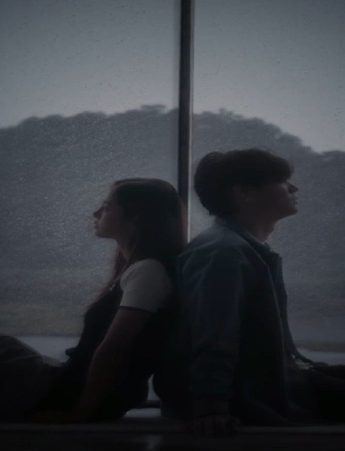

🎵 now playing
"Some people belong to your past. Until they suddenly don't."
"The voice that carried her through law school never expected to meet her."

"Some people spend a lifetime finding each other. They spent a lifetime finding the courage to admit it."
"He had spent years rescuing things from the water. He never expected to be rescued in return."